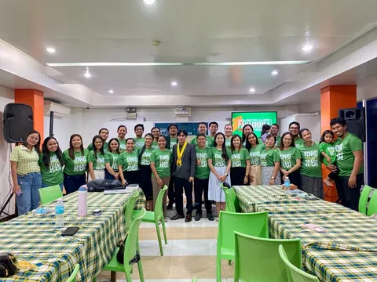
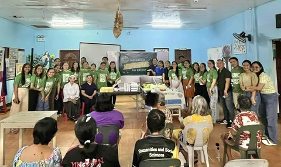
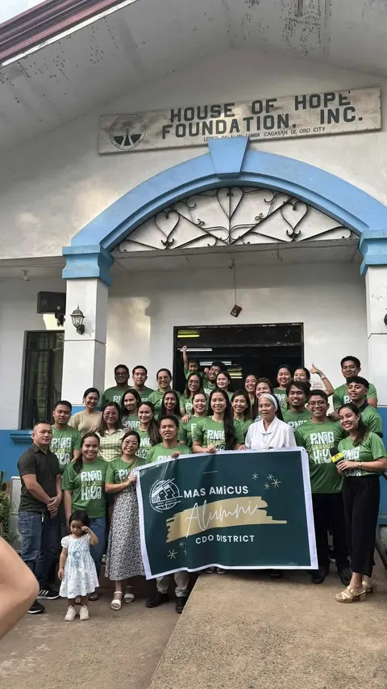

Panaghiusa 2025
The programme ran 1:00–4:00 PM at House of Hope Foundation in Lumbia, with dinner from 5:00 to 8:00 PM. Registration was ₱999 and included the alumni shirt and dinner. The edition gave:
- Medicines for House of Hope
- 1 hospital bed
- A set of cleaning materials
- A church comfort room renovation: labour and construction materials
On , the ₱30,000 for the comfort room renovation was turned over to Samay SDA Church.



View all 5 photos from Panaghiusa 2025